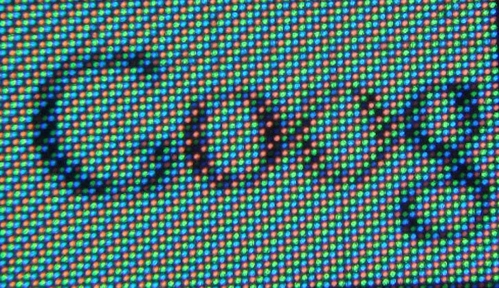
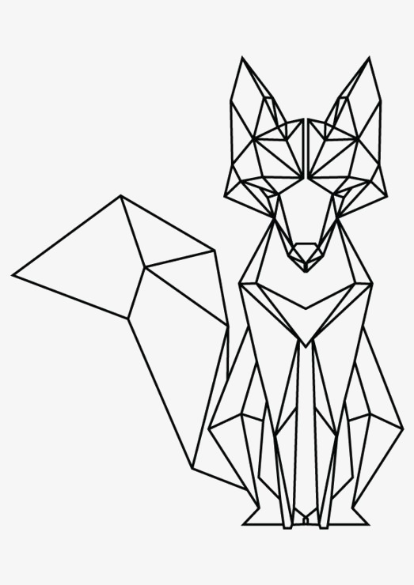
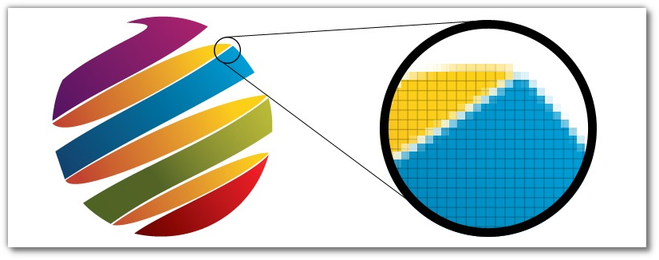
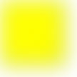
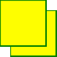
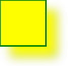
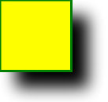
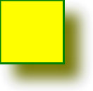

Topic: SVG
4 main graphic file formats for web-development:
JPEG or JPG
GIF
PNG
SVG
JPEG (Joint Photographic Experts Group)
- use: digital photo storage (fast load, many colours, small non-recurring fragments)
- optimal 60-75% compression (loose data)
- no transparency support (not useful for logos and icons)
GIF (Graphic Interchange Format)

- transparency support, possibility of animation (use: logos, icons, gifs)
- not optimal compression but no data loose
- only 256 colours (no photos storage)
PNG (Portable Network Graphic)
- GIF and JPEG combination (use: small images, logos, icons, diagrams, graphical elements with transparency, photos without quality loose)
- 256+ colours, better transparency support
- better compression, no data loose (big files for big photos)
- no animation support
JPEG, GIF and PNG are BITMAPS
(rectangular pixel array)
When zoom in an image - loose its quality

Problem solves by using vector-based graphics (in web by SVG - Scalable Vector Graphics)
(create using primitives - simple geometric figures)
SVG images are scalable and zoomable
What is SVG?
- SVG is used to define vector-based graphics for the Web
- SVG defines the graphics in XML format
- Every element and every attribute in SVG files can be animated
- SVG is a W3C recommendation
- SVG integrates with other W3C standards such as the DOM and XSL
SVG Advantages
You can embed SVG elements directly into your HTML pages
SVG Rectangle
Example 1
Example 2
Example 3
Example
SVG Circle
SVG Ellipse
Example 1
Example 2
Example 3
SVG Line
SVG Polygon
Example 1
Example 2
Example 3
Example 4
SVG Polyline
used to create any shape that consists of only straight lines (connected at several points):
Example 1
Example 2
SVG Path
Strongest element. Commands available:
- M = moveto
- L = lineto
- H = horizontal lineto
- V = vertical lineto
- C = curveto
- S = smooth curveto
- Q = quadratic Bézier curve
- T = smooth quadratic Bézier curveto
- A = elliptical Arc
- Z = closepath
Example
SVG Text
Example 1
Example 2
Example 3
Example 4
SVG Stroke Properties
Many filter elements
(for combining images, color transformations, blur, ligntning, drop shadows etc.)
    Linear and Radial Gradients
SVG ideal for creating icons, logos, diagrams
- file size depends on image complexity and it smaller than JPEG and PNG for simple images
- simple to make changes with any text editor
- do not supported by old browsers
- SVG cannot be used in photos